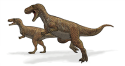
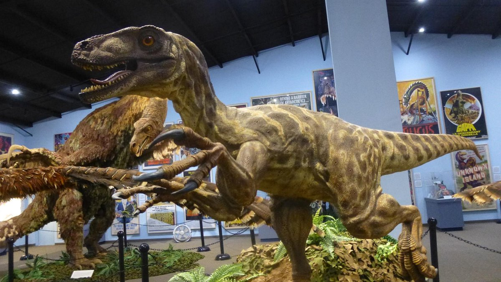
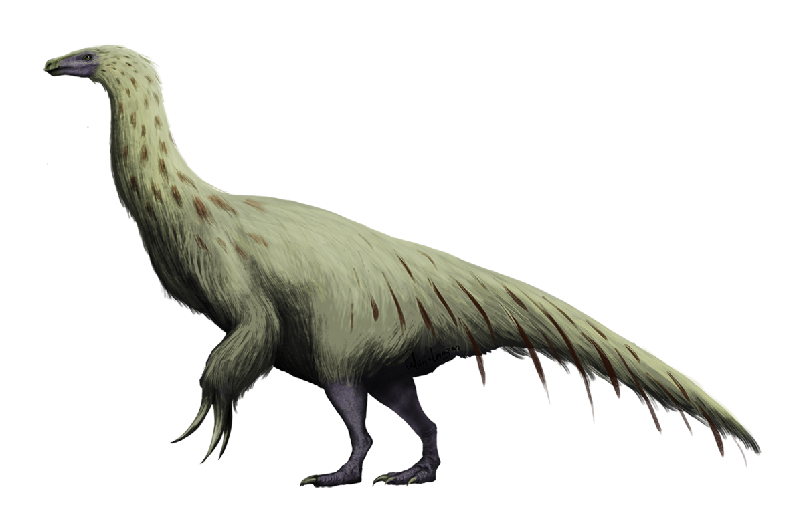

Tyrannosaurus Rex
Tyrannosaurus rex was one of the most ferocious predators to ever walk the Earth. With a massive body, sharp teeth, and jaws so powerful they could crush a car, this famous carnivore dominated the forested river valleys in western North America during the late Cretaceous period, 68 million years ago.
Although T. rex is a household name, what we know about this tyrannosaur is constantly evolving. Improved technologies, such as biomechanical modeling and x-ray imaging, have allowed scientists to gain a deeper understanding of how this apex predator lived.
Strengths
Tyrannosaurus rex, whose name means “king of the tyrant lizards,” was built to rule. This dinosaur’s muscular body stretched as long as 40 feet—about the size of a school bus—from its snout to the tip of its powerful tail. Weighing up to eight tons, T. rex stomped headfirst across its territory on two strong legs. These dinosaurs likely preyed on living animals and scavenged carcasses—and sometimes they even ate one another.
Did you know?
Megalosaurus is believed to be the first dinosaur ever described scientifically. British fossil hunter William Buckland found some fossils in 1819, and he eventually described them and named them in 1824.
Museums
The Dinosaur Museum in Blanding (Ohio), It is a must stop for all dinosaur lovers!
Dino of the day: Therizinosaurus
Its earliest remains were found by a Soviet-Mongolian expedition in the late 1940s in the Nemegt Formation in southwestern Mongolia. It was a huge biped which is the name recently given to a giant arm with long claws.